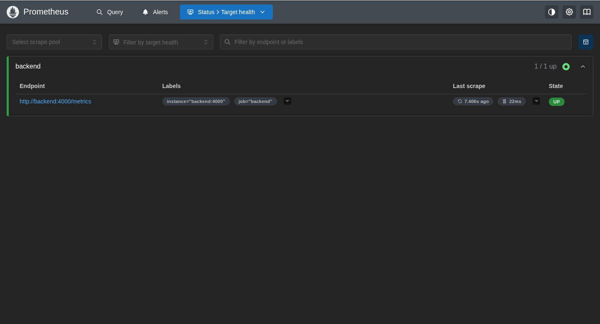
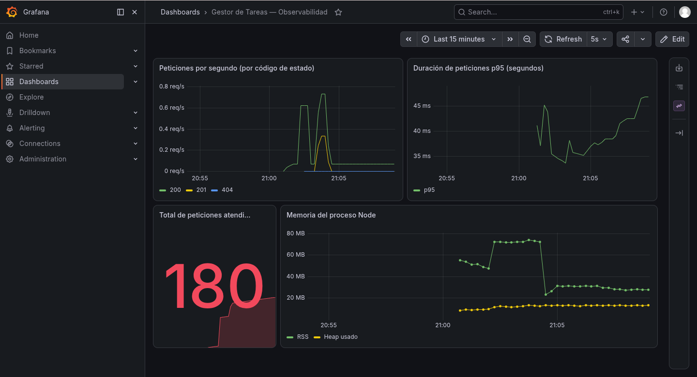
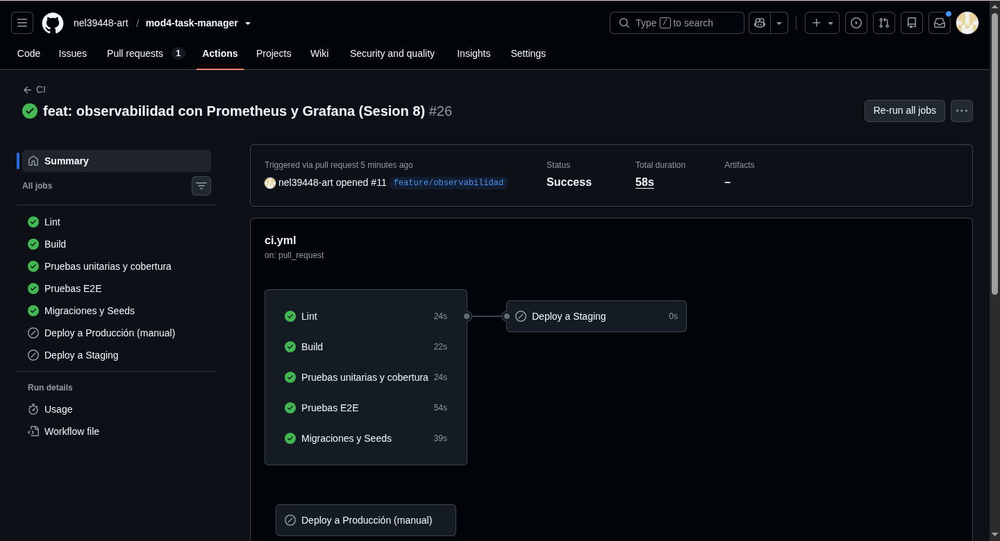
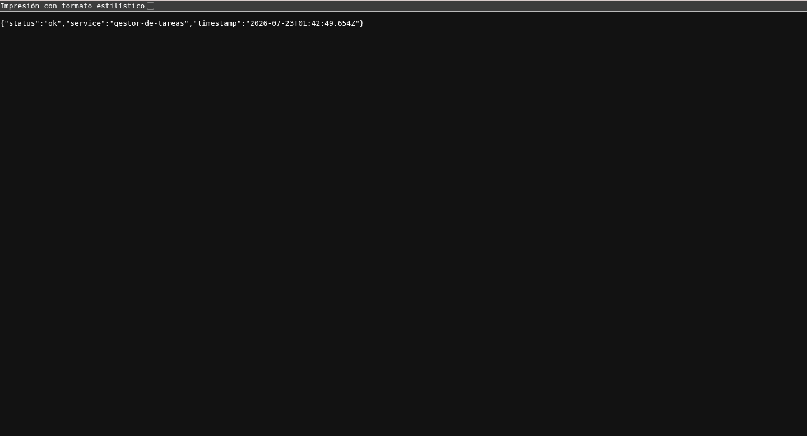

Esta es la última sesión del módulo. No trae conceptos nuevos de los laboratorios anteriores: sirve para agregar observabilidad al proyecto, verificar que las siete piezas construidas en las sesiones 1 a 7 funcionan juntas como un sistema, y preparar la presentación final.
El proyecto es un gestor de tareas: una aplicación web para crear, listar, completar y eliminar tareas. Alrededor de ella se construyó, sesión a sesión, un pipeline de integración y despliegue continuo: el código se prueba, se conteneriza, guarda sus secretos, aplica migraciones, se despliega solo a staging y se puede revertir. En esta sesión le agregué el nivel de monitoreo.
La observabilidad responde tres preguntas sobre un sistema en producción: ¿está vivo?, ¿está
sano?, ¿qué pasó? Mi proyecto ya respondía las dos primeras con el healthcheck /health
y los logs de Railway. En esta sesión agregué métricas para responder mejor la tercera.
Instrumenté el backend con prom-client: una ruta /metrics en formato
Prometheus y un middleware que mide cada petición (duración y total, por método, ruta y código de
estado), además de las métricas por defecto del proceso Node (memoria, CPU).
// src/metrics.js — el middleware mide cada petición
export function metricsMiddleware(req, res, next) {
const end = httpRequestDuration.startTimer()
res.on('finish', () => {
const route = req.route?.path || req.path
const labels = { method: req.method, route, status_code: res.statusCode }
end(labels)
httpRequestsTotal.inc(labels)
})
next()
}
Agregué dos servicios más al docker-compose: Prometheus, que raspa
/metrics del backend cada 15 segundos, y Grafana, que lee de Prometheus
y muestra las métricas en un tablero. Ahora docker compose up levanta cinco servicios:
frontend, backend, postgres, prometheus y grafana.
Levanté el stack, generé tráfico a la API, y verifiqué la cadena completa. Prometheus muestra el backend como objetivo activo:

http://backend:4000/metrics, estado UP.Y Grafana muestra el tablero poblado con datos reales de la aplicación: peticiones por segundo, duración de las peticiones, total atendidas y memoria del proceso.

Prometheus y Grafana serían, en un sistema real, la base para alertas automáticas cuando una métrica se sale de rango. Eso queda como la siguiente ruta de crecimiento.
La mejor forma de comprobar que las siete piezas funcionan juntas es hacer pasar un cambio real
por todas ellas, de punta a punta. Hice un cambio pequeño y visible: enriquecí la ruta
/health para que además de status devuelva el nombre del servicio y la
hora.
app.get('/health', (req, res) => {
res.status(200).json({
status: 'ok',
service: 'gestor-de-tareas',
timestamp: new Date().toISOString(),
})
})
Lo subí por el flujo normal: rama, Pull Request, y el pipeline se disparó. Las cinco etapas pasaron en verde.

Al hacer el merge a main, se disparó el despliegue automático a staging. Confirmé en
la URL pública que el cambio ya estaba vivo: /health devuelve los campos nuevos.

/health ya devuelve service y timestamp.$ curl https://backend-staging-6143.up.railway.app/health
{"status":"ok","service":"gestor-de-tareas","timestamp":"2026-07-23T01:40:23.624Z"}
El cambio recorrió las siete etapas: lint, pruebas, E2E, build, migraciones y seed, y despliegue. La integración total quedó verificada con un cambio real, no solo revisando que cada pieza "existe".
| # | Etapa | Qué hace | Estado |
|---|---|---|---|
| 1 | Lint | ESLint revisa el estilo del código en cada PR. | Verde |
| 2 | Pruebas (unit + componente + API) | Vitest corre 30 pruebas: funciones, componentes React y la API con Supertest. | Verde |
| 3 | E2E | Playwright recorre el flujo feliz en un navegador real. | Verde |
| 4 | Build | Vite construye el frontend de producción. | Verde |
| 5 | Contenerización | docker compose up levanta los 5 servicios juntos. | Verde |
| 6 | Migraciones + seed | El pipeline aplica las migraciones de Prisma contra un PostgreSQL efímero. | Verde |
| 7 | Despliegue | Un merge a main despliega solo a staging; producción es manual, con rollback demostrado. | Verde |
Las siete etapas están verificadas en el pipeline. Sé explicar qué hace cada una, no solo que
existe, y preparé el guion de la presentación en PRESENTACION.md.
Cierro el módulo con el ciclo de CI/CD completo funcionando sobre un proyecto real. Empecé con una app que guardaba tareas en memoria y termino con una aplicación probada, contenerizada, con su base de datos y secretos bajo control, monitoreada, y desplegándose sola a dos ambientes separados con capacidad de revertirse.
De esta última sesión me llevo la idea de la observabilidad como tres preguntas concretas —¿está vivo?, ¿está sano?, ¿qué pasó?— y ver cómo cada una se responde con algo que ya construí: el healthcheck, la respuesta enriquecida, los logs y ahora las métricas en Grafana.
El proyecto no termina aquí: es una base real que puedo seguir mejorando. El mapa de crecimiento que quedó pendiente —Kubernetes, Terraform, alertas automáticas sobre las métricas, CI/CD móvil— es mi ruta de estudio siguiente.
| Requisito | Estado |
|---|---|
| Las 7 etapas del pipeline funcionan de punta a punta | Cumplido |
| Prueba de fuego: un cambio real llegó de mi rama hasta el despliegue en staging | Cumplido (Figuras 3 y 4) |
| Observabilidad: métricas del backend en Prometheus y Grafana | Cumplido (Figuras 1 y 2) |
| Sé explicar qué hace cada etapa | Cumplido (PRESENTACION.md) |
| Materiales de presentación preparados | Cumplido |
Graduado/a Misión DevOps: el pipeline completo, con las 7 etapas ejecutándose realmente, quedó demostrado de punta a punta con un cambio real desplegado a staging.